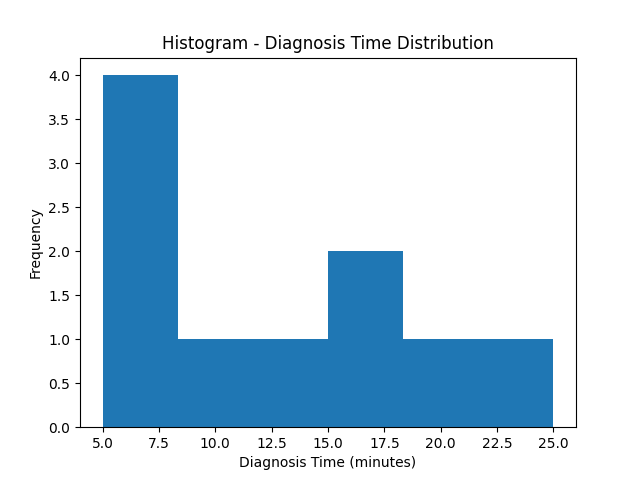
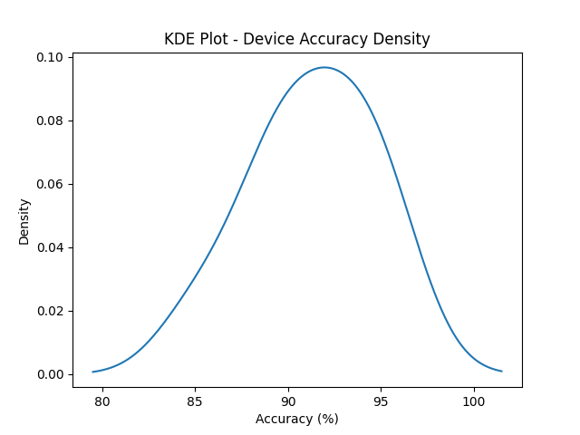
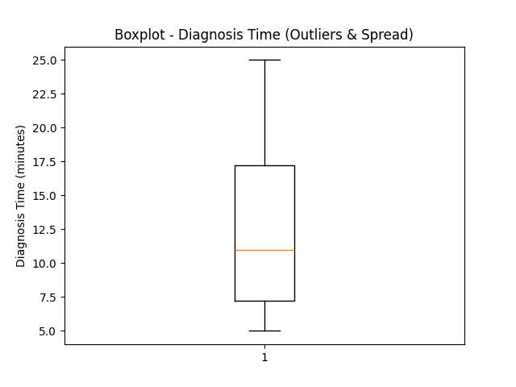

Statistical Plots & Distribution Analysis
This project analyzes the performance of biomedical devices used for patient diagnosis. The analysis focuses on diagnosis time, device accuracy and successful diagnosis rate. Statistical plots such as histograms, KDE plots and boxplots are used to inspect distributions, detect outliers and analyze skewness and spread.
| Patient ID | Device | Diagnosis Time | Accuracy | Result |
|---|---|---|---|---|
| 1 | ECG | 5 min | 92% | Success |
| 2 | MRI | 18 min | 96% | Success |
| 3 | Ultrasound | 10 min | 89% | Success |
| 4 | ECG | 6 min | 85% | Fail |
| 5 | MRI | 25 min | 94% | Success |

This histogram shows the distribution of diagnosis time across patients. Most devices complete diagnosis between 5 and 20 minutes.

The KDE plot represents the density of device accuracy values and shows that most devices maintain accuracy above 85%.

The boxplot helps identify outliers and shows the spread of diagnosis time across different biomedical devices.
Outliers represent extreme values that differ significantly from the majority of the dataset. In biomedical device analysis, unusually high diagnosis times may indicate device delays or complex patient cases. The distribution shows slight right skewness because a few cases required longer diagnosis time. The spread of the data is moderate, which indicates relatively stable device performance across patients.
The statistical plots indicate that most biomedical devices perform diagnosis within 5 to 20 minutes while maintaining accuracy above 85%. The histogram and KDE plots demonstrate a concentrated distribution of device accuracy, suggesting reliable diagnostic performance. The boxplot reveals a few higher diagnosis time values that act as potential outliers, indicating possible operational delays or patient-specific complexity. Overall, the data shows slightly right-skewed distribution with moderate spread, confirming stable performance among the analyzed biomedical devices.